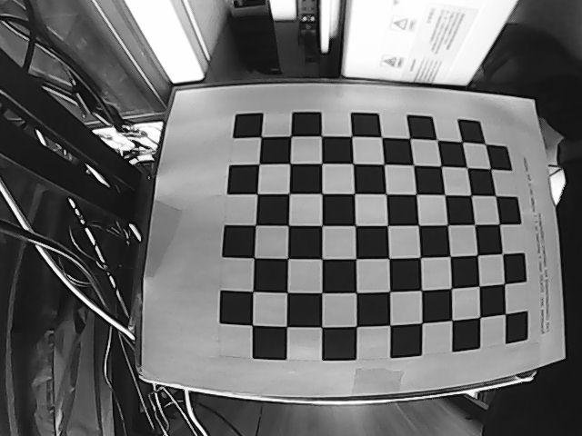
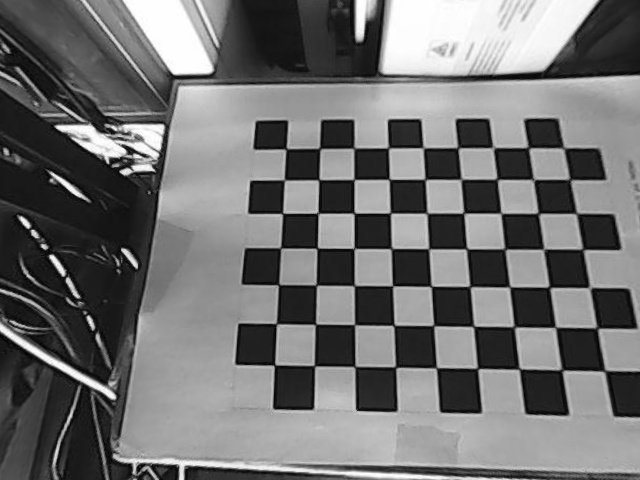
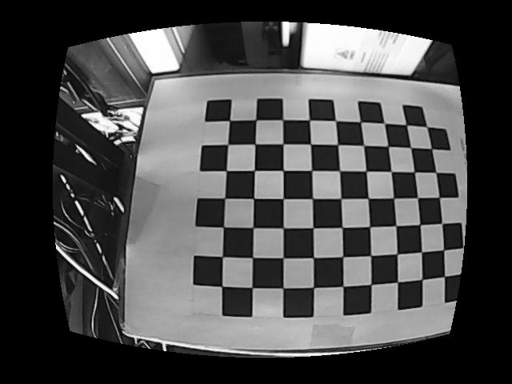

实际进行畸变校正的注意点
有一个项目用到了畸变校正，总结一下注意点
实验图多大于少
项目采图比较麻烦，所以一开始只用了十二张，但效果很不好。建议还是老老实实多采一些图，三十张吧，然后可以从中进行采样以此来比较健壮性。不然只用十几张，风险很大，不好确定是否这十几张就是完美的。
对校正的图进行反求来验证结果
实际使用的过程中，我发现我经常会弄混畸变和反畸变。所以建议两个程序都做，这样不会乱掉，即流程是：采畸变图 → 畸变校正得到一张图 → 对这个图再进行反求回到畸变的图。
进行常规畸变和鱼眼镜头畸变
最好做两种模型的畸变，一个常规的张正友畸变，另一个是鱼眼镜头畸变。具体做法问 AI，用两个才能比较出效果。我一开始就用的正常的畸变校正，看了一下结果以为还可以，但实际过了一段时间才发现原来应该用鱼眼镜头畸变的模型。
简单的代码展示
如下是简单的一个代码展示，具体的做法在同目录的 code 文件夹中。
import cv2
import numpy as np
import math
data = np.load("fisheye_calib_result.npz")
K, D = data["K"], data["D"]
img_size = tuple(data["img_size"])
fx, fy = K[0, 0], K[1, 1]
cx, cy = K[0, 2], K[1, 2]
k1, k2, k3, k4 = D.flatten()
print("#define FISHEYE_FX ", fx)
print("#define FISHEYE_FY ", fy)
print("#define FISHEYE_CX ", cx)
print("#define FISHEYE_CY ", cy)
print("#define FISHEYE_K1 ", k1)
print("#define FISHEYE_K2 ", k2)
print("#define FISHEYE_K3 ", k3)
print("#define FISHEYE_K4 ", k4)
def undistort_point_fisheye(u, v, max_iter=10, tol=1e-9):
# Step1: normalized distorted coords
x_p = (u - cx) / fx
y_p = (v - cy) / fy
# handle alpha != 0 is omitted for brevity (alpha usually 0)
theta_d = math.hypot(x_p, y_p) # sqrt(x_p^2 + y_p^2)
if theta_d < 1e-12:
return u, v, 0.0, 0.0 # center point
# Step3: solve for theta (Newton)
theta = theta_d # init
for i in range(max_iter):
th2 = theta*theta
th4 = th2*th2
th6 = th4*th2
th8 = th4*th4
f = theta*(1 + k1*th2 + k2*th4 + k3*th6 + k4*th8) - theta_d
df = 1 + 3*k1*th2 + 5*k2*th4 + 7*k3*th6 + 9*k4*th8
if abs(df) < 1e-12:
break
delta = f / df
theta -= delta
if abs(delta) < tol:
break
# Step4: scale and undistort normalized coords
s = math.tan(theta) / theta_d
a = s * x_p
b = s * y_p
# Step6: pixel coords after undistortion
u_und = fx * a + cx
v_und = fy * b + cy
return u_und, v_und, a, b
def distort_point_fisheye(x, y):
"""输入去畸变后的归一化坐标 (x, y)，返回畸变后的 (x_d, y_d)"""
r = math.hypot(x, y)
if r < 1e-12:
return x, y
theta = math.atan(r)
theta2 = theta*theta
theta4 = theta2*theta2
theta6 = theta4*theta2
theta8 = theta4*theta4
theta_d = theta*(1 + k1*theta2 + k2*theta4 + k3*theta6 + k4*theta8)
scale = theta_d / r
return x * scale, y * scale
# === 读取图像 ===
img = cv2.imread("./data_210deg_2/cap_image_3.jpg")
h, w = img.shape[:2]
new_img = np.zeros_like(img)
# 反向映射：目标图像 → 原图像
for v_out in range(h):
for u_out in range(w):
# 归一化去畸变坐标
x = (u_out - cx) / fx
y = (v_out - cy) / fy
# 畸变（即映射回原图）
x_d, y_d = distort_point_fisheye(x, y)
# 转回像素坐标
u_src = fx * x_d + cx
v_src = fy * y_d + cy
if 0 <= u_src < w - 1 and 0 <= v_src < h - 1:
# 双线性插值
ui, vi = int(u_src), int(v_src)
du, dv = u_src - ui, v_src - vi
new_img[v_out, u_out] = (
(1 - du) * (1 - dv) * img[vi, ui] +
du * (1 - dv) * img[vi, ui + 1] +
(1 - du) * dv * img[vi + 1, ui] +
du * dv * img[vi + 1, ui + 1]
)
cv2.imwrite("undistorted_manual.jpg", new_img)
print("✅ 已生成 undistorted_manual.jpg")
# 反过来再看一下
new_new_img = np.zeros_like(new_img)
for v_out in range(h):
for u_out in range(w):
u_und, v_und, a, b = undistort_point_fisheye(u_out, v_out)
if 0 <= u_und < w - 1 and 0 <= v_und < h - 1:
ui, vi = int(u_und), int(v_und)
du, dv = u_und - ui, v_und - vi
new_new_img[v_out, u_out] = (
(1 - du) * (1 - dv) * new_img[vi, ui] +
du * (1 - dv) * new_img[vi, ui + 1] +
(1 - du) * dv * new_img[vi + 1, ui] +
du * dv * new_img[vi + 1, ui + 1]
)
cv2.imwrite("undistorted_manual_again.jpg", new_new_img)
print("✅ 已生成 undistorted_manual_again.jpg")
# 对比显示
cv2.imshow("original", img)
cv2.imshow("manual undistort", new_img)
cv2.waitKey(0)
cv2.destroyAllWindows()
结果如图（原始畸变图→畸变校正图→还原畸变图）：


